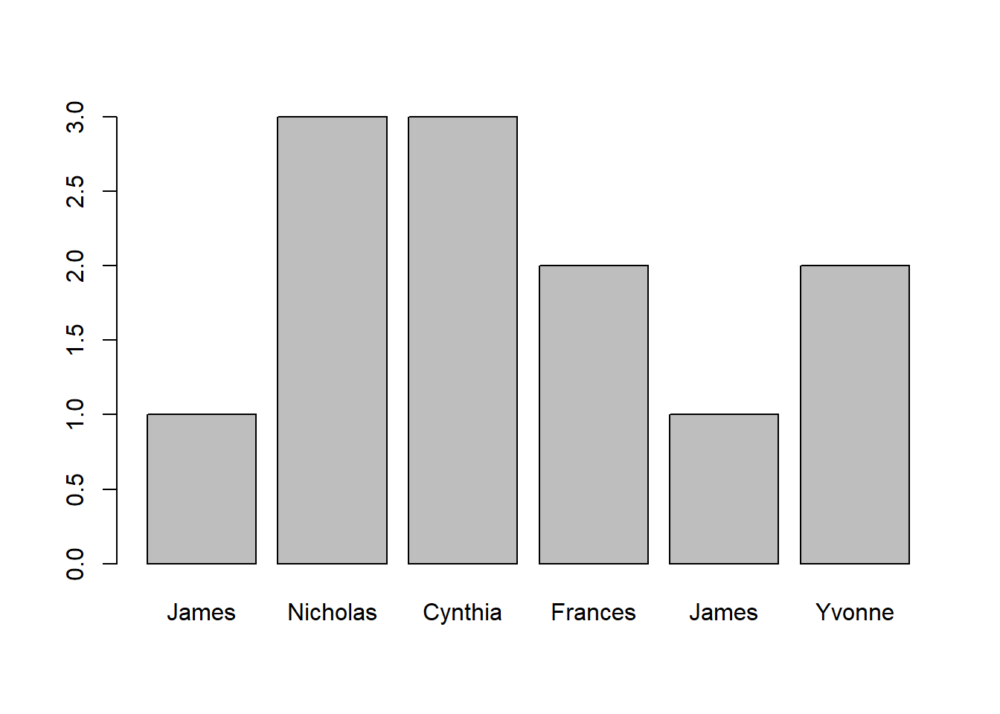

choose.files() #PCEstadística para Lingüistas
Introducción a R
Resultados de aprendizaje esperados
Aprender a abrir tablas y guardarlas en R
Aprender a buscar información en R usando operadores lógicos
1. Tablas
1.1. Abrir tabla manualmente
Identificar una carpeta en el PC:
Identificar una carpeta en una Mac:
file.choose() #Mac y otrosAbrir archivo en tabulaciones:
tabla1<-read.table(file.choose(), header=TRUE)Abrir archivos csv:
tabla1<-read.csv(file.choose(), header=TRUE)1.2. Abrir la tabla desde el archivo de origen:
nombretabla<-read.table("...", header= T)En mi caso, voy a abrir la tabla desde un PC. Así que añado la información de mi directorio de archivos:
tabla1<-read.table("/Users/mycomputer/tablas/nombres.txt", header= T)Con esta definición, cada vez que escriba la variable tabla1 denominada nombres.txt . La función head() nos permite observar las primeras filas y verificar la información de la tabla de datos:
head(tabla1) name nickname gender nameSyls nicknameSyls
1 Albert Al male 2 1
2 Andrew Andy male 2 2
3 Anthony Tony male 3 2
4 Arthur Art male 2 1
5 Arthur Arty male 2 2
6 Bernard Bernie male 2 2Con la función str() obtenemos un resumen con el número de observaciones, el número de variables y los niveles de las variables.
str(tabla1)'data.frame': 91 obs. of 5 variables:
$ name : chr "Albert" "Andrew" "Anthony" "Arthur" ...
$ nickname : chr "Al" "Andy" "Tony" "Art" ...
$ gender : chr "male" "male" "male" "male" ...
$ nameSyls : int 2 2 3 2 2 2 2 1 1 3 ...
$ nicknameSyls: int 1 2 2 1 2 2 1 2 1 1 ...En cambio, con la función summary() obtenemos la estadística descriptiva de nuestra tabla.
summary(tabla1) name nickname gender nameSyls
Length:91 Length:91 Length:91 Min. :1.000
Class :character Class :character Class :character 1st Qu.:2.000
Mode :character Mode :character Mode :character Median :2.000
Mean :2.308
3rd Qu.:3.000
Max. :4.000
nicknameSyls
Min. :1.000
1st Qu.:1.000
Median :1.000
Mean :1.385
3rd Qu.:2.000
Max. :2.000 1.3. Búsqueda de filas y columnas
Ahora vamos a ver algunos elementos básicos de R para buscar información en una tabla:
Si queremos extraer información de la primera fila de la segunda columna, debemos usar la siguiente línea:
tabla1[1,2][1] "Al"Para extraer información de la primera fila:
tabla1[1,] name nickname gender nameSyls nicknameSyls
1 Albert Al male 2 1Para extraer información de la primera fila de la primer columna:
tabla1[1,1][1] "Albert"Para extraer información de la primera columna:
tabla1[,1] [1] "Albert" "Andrew" "Anthony" "Arthur" "Arthur"
[6] "Bernard" "Bernard" "Charles" "Charles" "Christopher"
[11] "Daniel" "Daniel" "Donald" "Edward" "Edward"
[16] "Eugene" "Francis" "Francis" "Frederick" "Frederick"
[21] "Henry" "Irving" "James" "James" "John"
[26] "John" "Joseph" "Lawrence" "Leonard" "Nathan"
[31] "Nathan" "Nicholas" "Patrick" "Peter" "Raymond"
[36] "Richard" "Richard" "Robert" "Robert" "Robert"
[41] "Ronald" "Ronald" "Russell" "Samuel" "Samuel"
[46] "Stephan" "Stuart" "Theodore" "Theodore" "Thomas"
[51] "Thomas" "Thomas" "Timothy" "Timothy" "Walter"
[56] "Walter" "William" "William" "William" "William"
[61] "Amanda" "Catherine" "Catherine" "Christine" "Christine"
[66] "Cynthia" "Cynthia" "Deborah" "Deborah" "Elizabeth"
[71] "Elizabeth" "Elizabeth" "Elizabeth" "Florence" "Frances"
[76] "Frances" "Janet" "Janice" "Katherine" "Katherine"
[81] "Nancy" "Pamela" "Patricia" "Roberta" "Sophia"
[86] "Susan" "Susan" "Teresa" "Valerie" "Veronica"
[91] "Yvonne" Para extraer un conjunto específico de filas simplemente creamos un vector:
tabla1[c(24, 32, 67, 75, 23, 91),] name nickname gender nameSyls nicknameSyls
24 James Jimmy male 1 2
32 Nicholas Nick male 3 1
67 Cynthia Cynth female 3 1
75 Frances Fran female 2 1
23 James Jim male 1 1
91 Yvonne Vonna female 2 2Para extraer solamente los datos de los hombres o mujeres:
tabla1[tabla1$gender=="male",] name nickname gender nameSyls nicknameSyls
1 Albert Al male 2 1
2 Andrew Andy male 2 2
3 Anthony Tony male 3 2
4 Arthur Art male 2 1
5 Arthur Arty male 2 2
6 Bernard Bernie male 2 2
7 Bernard Bern male 2 1
8 Charles Charlie male 1 2
9 Charles Chuck male 1 1
10 Christopher Chris male 3 1
11 Daniel Dan male 2 1
12 Daniel Danny male 2 2
13 Donald Don male 2 1
14 Edward Ed male 2 1
15 Edward Eddie male 2 2
16 Eugene Gene male 2 1
17 Francis Frank male 2 1
18 Francis Fran male 2 1
19 Frederick Fred male 3 1
20 Frederick Freddy male 3 2
21 Henry Hank male 2 1
22 Irving Irv male 2 1
23 James Jim male 1 1
24 James Jimmy male 1 2
25 John Jack male 1 1
26 John Jacky male 1 2
27 Joseph Joe male 2 1
28 Lawrence Larry male 2 2
29 Leonard Leo male 2 1
30 Nathan Nat male 2 1
31 Nathan Nate male 2 1
32 Nicholas Nick male 3 1
33 Patrick Pat male 2 1
34 Peter Pete male 2 1
35 Raymond Ray male 2 2
36 Richard Dick male 2 1
37 Richard Rick male 2 1
38 Robert Bob male 2 1
39 Robert Bobby male 2 2
40 Robert Bobby male 2 2
41 Ronald Ron male 2 1
42 Ronald Ronny male 2 2
43 Russell Russ male 2 1
44 Samuel Sam male 2 1
45 Samuel Sammy male 2 2
46 Stephan Steve male 2 1
47 Stuart Stu male 2 1
48 Theodore Ted male 3 1
49 Theodore Teddy male 3 2
50 Thomas Tom male 2 1
51 Thomas Thom male 2 1
52 Thomas Thom male 2 1
53 Timothy Tim male 3 1
54 Timothy Timmy male 3 2
55 Walter Walt male 2 1
56 Walter Wally male 2 2
57 William Bill male 2 1
58 William Billy male 2 2
59 William Billy male 2 2
60 William Will male 2 1En la línea anterior tabla1$gender debe leerse como: la variable gender de la tabla tabla1.
2. Visualización de datos
Ahora vamos a diagramar el número de sílabas de algunos nombre de la tabla. Este diagrama lo haremos a partir de vectores. Así que creamos un vector con los nombres que queremos diagramar:
nombres<- c("James", "Nicholas","Cynthia", "Frances","James", "Yvonne")Después creamos un vector con el número de sílabas de cada uno de los seis nombres :
silabas<- c(1,3,3,2,1,2)Con la función names asignamos rótulos al vectos sílabas:
names(silabas)= nombresBarplot (diagrama de barras)
Ahora hacemos un barplot (diagrama de barras) con la información que acabamos de crear:
barplot(silabas)
Diagrama de barras con rótulos
Finalmente, añadimos rótulos con los argumentos xlab= y ylab= como se indica a continuación:
barplot(silabas, xlab="Nombres", ylab="Número de s√≠labas")Bibliograf√≠a üìö
Gries, Stefan. 2013. Statistic for linguistics with R. A practical introduction. Berlin: Mouton de Gruyter.
Levshina, Natalia. 2015. How to Do Linguistics with R: Data exploration and statistical analysis. Amsterdam: John Benjamins. Capítulo 2, pp. 21-40.
Smith, Bridget J., Beckman, Mary E., and Foltz, Anouschka (2016). Analyzing the sounds of languages. Ohio State University. Tabla 1, y capítulo 0. Recuperado de: [http://hdl.handle.net/1811/77848%5D